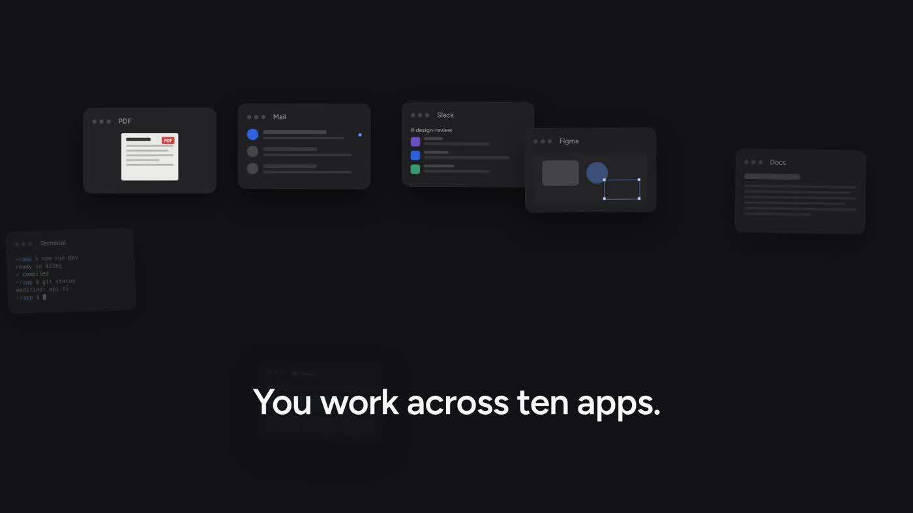
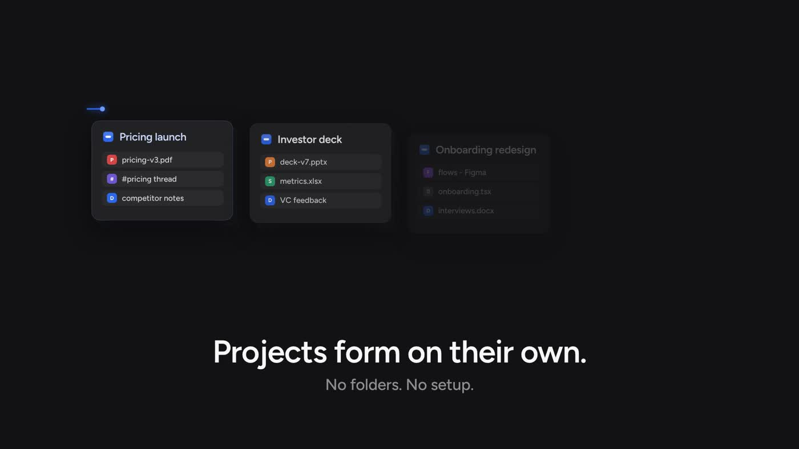
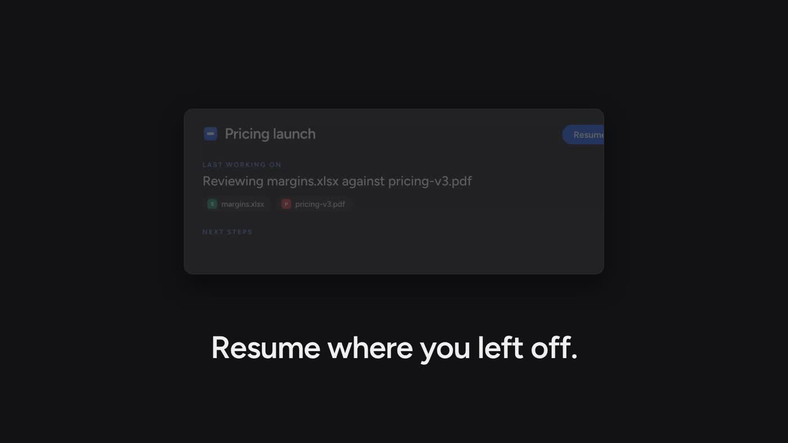

PROJECT NOTESKeep the free tier.
Keep the free tier.
Give people room.
Something to come back to.
A LITTLE LESS TO KEEP IN YOUR HEAD
All those tabs. That half-finished thought.
The reason you chose one thing over another.
A clearer way back to what matters.
Something to come back to.
“Let’s keep the free tier.
Give people room to try it.”
Validate the pricing proposal
Compare the saved references
A pricing launch. A decision worth keeping.
You move between ideas, notes, research, and the work itself. The important bits rarely live in one place.
Your workflow, as it is.
Connect supported sources and save what matters. Trace brings retained context together, with the evidence attached.
Decisions. Sources. Next steps.
Tomorrow morning. After a long weekend. Find the decision, recover the reference, and pick up the next step.
Less reconstruction. More momentum.
The useful pieces.
One place to return to.
From the pricing notes you retained.
One project. Three ways to pick up the thread.
Try an example.
The decision you saved, with its original context.
Illustrative exampleGo from a retained decision to the text behind it. Try the highlighted action.
The decision includes a way back to its retained source. Select the highlighted action in the app capture.

See the idea behind Trace in 43 seconds.
Retained memory stays on your Mac. You choose when to share context with an external AI.
Connect supported sources. Save browser evidence explicitly. Keep the boundaries clear.
Pause collection whenever you need. Stay in charge of what Trace retains.
Inspect the evidence and delete retained memory. Your context stays yours to manage.
No. Trace works with supported sources and the permissions you choose. Some content, including browser evidence, requires an explicit save.
No. Trace helps you return to retained project context yourself. You can also deliberately bring context into an AI conversation.
Shared memory for people and their AI is our bigger vision. Early access starts with the individual Mac experience.
For your work, your studies,
and the projects you’re not done with yet.